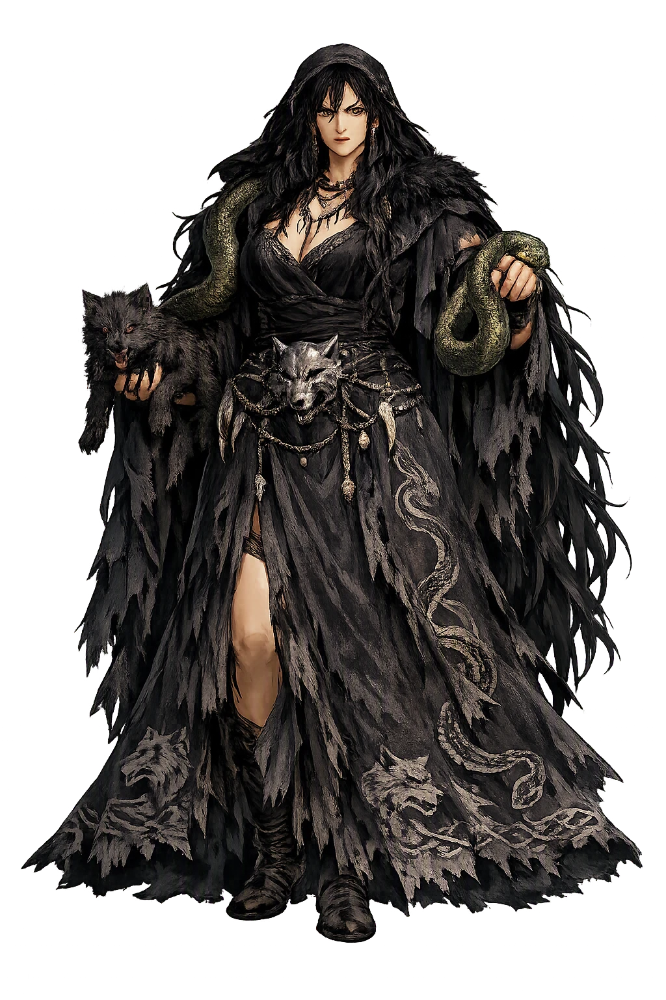
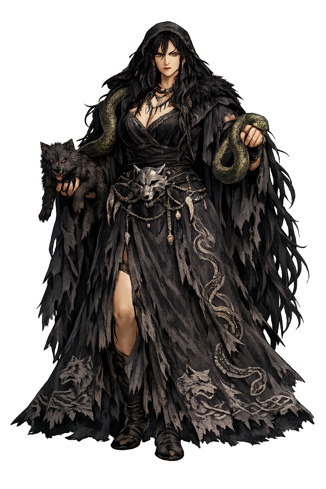

Stories of Angrboða
Angrboða's mythology is a genealogy of doom told in a handful of lines: three monstrous children, three divine overreactions, and an end foretold. The sources name her only a few times — Völuspá's ironwood hag and Snorri's single sentence in Gylfaginning — and everything else is honest inference.
Snorri Sturluson, in Gylfaginning, gives the whole genealogy in a sentence: Loki lay with a giantess named Angrboða in Jötunheimr, and she bore him three children — the wolf Fenrir, the Midgard-serpent Jörmungandr, and Hel. The gods took the children and did what gods do with prophecy made flesh: they flung the serpent into the encircling sea, cast Hel down into Niflheim to rule those who die of sickness and age, and kept the wolf in Asgard to be reared — until the day they bound him with the dwarves' fetter Gleipnir and paid for it with Týr's right hand in the wolf's mouth. The myth is chilling in its economy: Angrboða never acts, yet her womb authors the end of the world, and the gods' fear of her children is the measure of her power — three beings against whom Óðinn's order has no answer but segregation and chains. As genealogy it is a threat assessment; as story it is the briefest, coldest mother-portrait in Germanic myth.
Völuspá (st. 40) looks east and sees her — or sees someone scholars have long identified with her: an aged one sat in the ironwood and nourished Fenrir's offspring; from that brood comes one, in troll's shape, who steals the moon. She raises wolves in Járnviðr, the iron forest at the world's edge, and from her fostering flows the beast that swallows the sun. The identification of this nameless foster-mother with Angrboða is a scholarly construction, not a manuscript statement — Snorri keeps the two figures apart — and honest retellings should say so. But the fit is strong: both are giant-women of the east, both mother wolf-kind, both stand outside Ásgarðr's walls and inside its doom. If Völuspá's seeress did not name her, perhaps the audience already knew the name — and perhaps a poet who meant Angrboða expected the ironwood to say it for her.
The myth of Angrboða's children is really three myths of containment, each retold in Gylfaginning. Fenrir grows so fast that the gods bind him twice with ordinary chains; only Gleipnir — wrought from the footfall of a cat, the roots of a mountain, the sinews of a bear, the breath of a fish — holds him, and the price is Týr's hand. Jörmungandr is thrown into the sea, where he grows until he circles the world and bites his own tail. Hel is given Niflheim and 'all those who die of sickness and old age.' Mothers of monsters in other traditions fight or grieve; Angrboða is granted neither scene. Her myth is the myth of what her children become: the wolf whose escape kills Óðinn, the serpent whose venom kills Þórr, the daughter who keeps the greater share of the dead. Ragnarök, when it comes, comes from her line — the gods contain her brood for three ages and cannot contain the fact of her.
Here the tradition itself becomes the subject. Nowhere in the Poetic Edda, nowhere in Snorri's Edda, does Angrboða speak, act, love, or die. She is not present at Fenrir's binding, does not appear in Loki's flyting, and has no named role in Ragnarök — a silence that has proved an open door. Nineteenth-century mythographers began filling the gap: Jakob Grimm gave her a place in Deutsche Mythologie, and twentieth- and twenty-first-century novelists, role-playing games, comics, and neopagan liturgies have filled it further, most prominently in the video game God of War Ragnarök (2022), where for the first time she receives the interiority the medieval texts never gave her. The honest summary is the sparse one: a giantess, a name meaning 'sorrow-messenger,' three children, and a destiny — around which the modern imagination has had to build almost everything. Her obscurity is not an accident of survival; it is the shape of her myth.
Monster Mother, Sorcery
Angrboða is the giantess of Jötunheimr whose name means 'she who offers grief': mother — by Loki — of the three creatures who undo the gods: the wolf Fenrir, the world-serpent Jörmungandr, and Hel, queen of the dead. The Eddas give her barely a page, but that page contains the genealogy of Ragnarök.
Mother of Fenrir, Jörmungandr, and Hel — the brood whose growth the gods cannot allow (Prose Edda, Gylfaginning).
Her name is a prophecy: angr, 'sorrow,' and boða, 'messenger' — grief announced ahead of itself.
The eth (ð) keeps the Old Norse consonant the ASCII form silences — the name spoken with its original bite.
Named by Snorri in Gylfaginning as a giantess of Jötunheimr; heard behind the unnamed 'aged one' of Völuspá's ironwood.
From the original script to the living URL
ᛅᚾᚴᚱᛒᚢᚦᛅ
The name in its original Norse form. Angrboða (ᛅᚾᚴᚱᛒᚢᚦᛅ) is attested in the source tradition — “She who offers sorrow”. Its original diacritics and script distinctions carry the full phonetic and orthographic weight of the source tradition.
angrboda
Reduced to plain angrboda, the name loses everything that made it specific: original diacritics and script distinctions. What remains is an ASCII string that machines can parse but that no longer speaks with its original voice.
Angrboða
The Unicode restoration recovers what ASCII flattened. Angrboða restores original diacritics and script distinctions, returning the name to its original written dignity. The domain encodes to Punycode, but the browser displays the truth.
Angrboða.com → xn--angrboa-1za.com
The non-ASCII characters in Angrboða are encoded while the ASCII remains visible. To the DNS, it is Punycode. To humanity, it is Angrboða.
Owned, ideal, and ASCII forms of Angrboða
Angrboða
Restores ᛅᚾᚴᚱᛒᚢᚦᛅ. The live temple domain — angrboða.com.
angrboda
Flattens ᛅᚾᚴᚱᛒᚢᚦᛅ. The plain ASCII fallback — what DNS and legacy systems see.
How Angrboða was spoken
How Angrboða travels from ancient script to the modern URL
Angrboða is the most important character in Norse myth who never does anything. That is precisely her fascination. The gods do not fight her, trick her, or marry her; they manage her children — chain the wolf, drown the serpent's threat in the sea, exile the daughter to the dead — and never once confront the mother. The asymmetry is the message. Her power is generative and therefore unanswerable by the Þórr-pattern of meeting force with force: you cannot smash a womb. So the myth does what an order does with what it cannot answer — it quarantines the products and leaves the producer unnamed at the edge of the map, in Jötunheimr, in the ironwood, in a silence the listener is meant to notice. To meditate on Angrboða is to ask what a tradition fears when it fears a mother. Ragnarök, when it comes, will come from her line — but it is worth remembering that every one of her monsters was made monstrous first by the gods' own fear, and that the word she is named from, angr, crossed into English as ordinary, everyday anger.
Enter Extended Lore